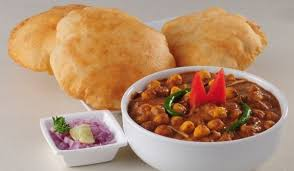
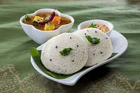
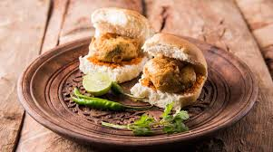
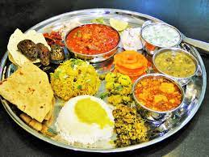
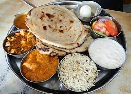

|| Shree Krishna Restaurant ||
Maharashtriyan,Panjabi,North Indian, Mughlai, Chinese, South Indian, Desserts, Beverages, Shake, Sichuan Kothrud, Pune. Contact Number:+917768052738.Misal Pav

Misal pav is a popular Maharashtrian street food of usal (sprouts curry) topped with onions, tomatoes, farsan (fried savory mixture), lemon juice, coriander leaves and served with a side of soft pav (Indian dinner rolls). The sprouts curry is made from moth bean sprouts. This misal recipe is a tasty and filling vegan dish that can be served as breakfast, lunch or brunch.
₹80
Chole Bhature
Chole Bhature also known as Chana Bhatura is one of the most popular Punjabi dish liked almost all over India. Chole stands for a spiced tangy chickpea curry and Bhatura is a soft and fluffy fried leavened bread.
₹80
Dosa

Dosa is the ever-popular South Indian breakfast of crispy crepes made with fermented rice and lentil batter. With just a handful of ingredients learn to make the classic Dosa recipe from scratch with my easy video and step-by-step photos. I also cover making your own dosa batter in a blender or mixer-grinder, tips on fermentation and cooking dosa to help you make the best dosa – crispy, soft and so good to dunk in a bowl of Coconut Chutney or piping hot Sambar.
₹80
Idli
As much as Indians take pride in their traditional and classic dishes, the arena of dishes made with leftover food is also reputed in the Indian cuisine scenario. In India, food is also considered divine. Hence, we try and not waste it. From parathas and rice dishes to sandwiches, chaats and everything in between – leftover food can be further used to create unique dishes. One such dish is this Idli Chaat, essentially made using leftover Idli. This Idli Chaat recipe is quick, filling, tasty and fun!
₹50
Vada Pav
Vada Pav is one of Mumbai’s most famous food. It’s almost synonyms with the city, in fact I remember when I was in Mumbai few years back, it was one of my goals to eat vada pav! This popular street food is loved by one and all.
₹20
Sandwich

This creamy vegetable sandwich is an easy back to school recipe that also makes an excellent, quick dinner option. It's creamy, cheesy, loaded with veggies, and super delicious!
₹50
Maharashtrian Thali
Maharashtrian cuisine is a mix of Vegetarian and non-vegetarian cuisine. Malvani and Konkani cuisine is famous non-vegetarian cuisines. As Maharasthra is on the coastal side, seafood and rice are staples and are more famous for this cuisine. Then you have Maharashtrian Brahmins who have specialized in Vegetarian cuisine. In all, you have a mix of everything in Maharashtra.
₹100
Panjabi Thali
Punjab is a major producer of wheat, rice and dairy products. The cuisine is heavily influenced by agriculture and farming lifestyles. Punjabi cooking uses both the traditional and modern methods of cooking. Tandoori style of cooking is traditionally associated with Punjab. Tandoor or underground oven is very common along the dhabas (roadside restaurants) in India.